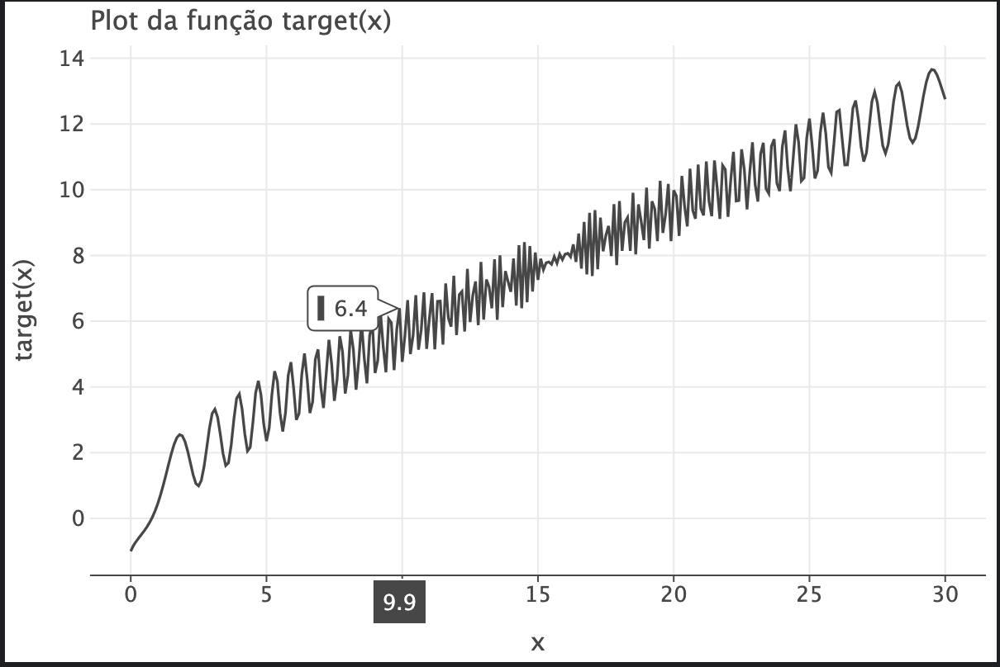
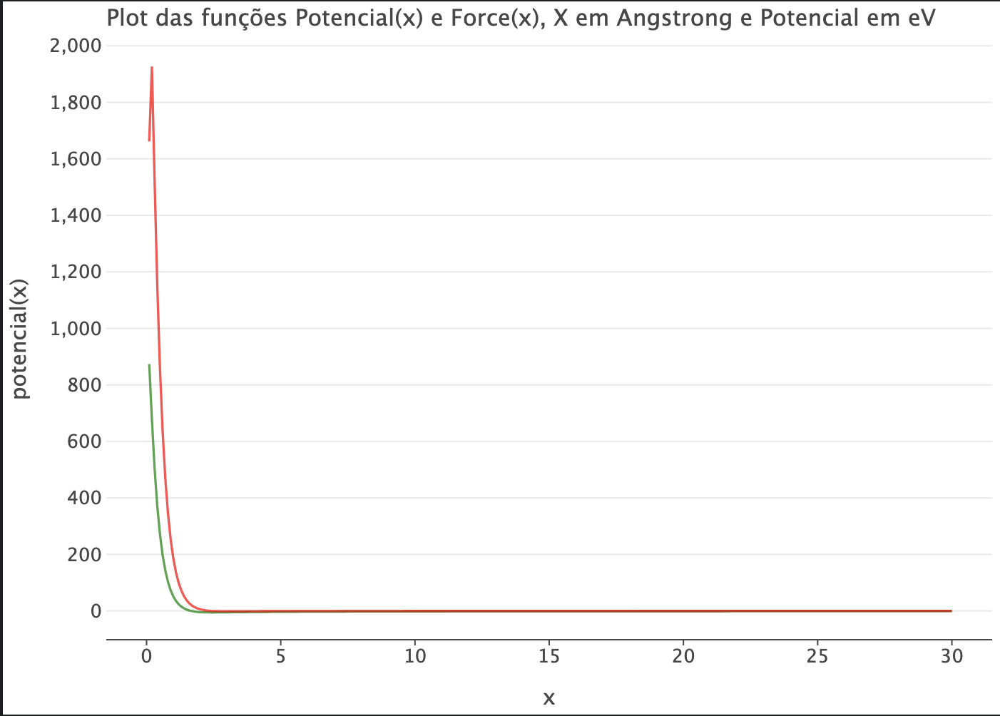

EP 1
Dependências
Kotlin.math é uma biblioteca que contém os métodos matemáticos exigidos para o ep. Letsplot é uma biblioteca para exportação gráfica
%use lets-plot
import kotlin.math.pow
import kotlin.math.cos
import kotlin.math.sin
import kotlin.math.sign
import org.jetbrains.letsPlot.export.ggsave
import org.jetbrains.letsPlot.geom.geomLine
import org.jetbrains.letsPlot.letsPlot
import org.jetbrains.letsPlot.label.ggtitle
import org.jetbrains.letsPlot.label.xlab
import org.jetbrains.letsPlot.label.ylab
import org.jetbrains.letsPlot.scale.scaleXContinuous
Exercício 1
Ítem (A)
Para resolver a equação \( x^{\frac{3}{4}} - cos(x^{2}) = 0 \) vamos dizer que \( x_1 \) é um ponto mais a esquerda que \( x_2 \) sempre. Seja \( f(x) = x^{\frac{3}{4}} - cos(x^{2}) \). O programa abaixo cria uma função que calcula a média de 2 valores e outra que corresponde a função do enunciado. Plotando a função do enunciado no seu respectivo domínio.
fun target(x: Double): Double {
return x.pow(3.0 / 4.0) - cos(x.pow(2.0))
}
fun x_med(a: Double, b: Double): Double {
return (a + b) / 2.0
}
val xs = (0..300).map { it / 10.0 }
var ys = xs.map { target(it) }
val data = mapOf(
"x" to xs,
"y" to ys
)
val plot = letsPlot(data) + geomLine {
x = "x"
y = "y"
} + ggtitle("Plot da função target(x)") + xlab("x") + ylab("target(x)")
plot

var x_1: Double = 0.0
var x_2: Double = 1.0
val err = 0.000001
// Essa parte do código inicializa x1 e x2. Após atualiza x1 e xx2 conforme indicado pelo método da bissecção
while (Math.abs(x_1 - x_2) > err) {
if (sign(target(x_1)) == sign(target(x_med(x_1, x_2)))) {
x_1 = x_med(x_1, x_2)
} else {
x_2 = x_med(x_1, x_2)
}
println("x1: $x_1")
println("x2: $x_2")
println("xMed: ${x_med(x_1, x_2)}")
}
Não existem outras raizes pois a função não é devinida para números negativos e é crescente na medida que x cresce.
Resposta encontrada: 0.7743964195251465
Ítem B
A derivada da função do ítem (a) é : \(f'(x) = \frac{3}{4}x^{\frac{-1}{4}} + 2x*sen(x^{2})\), a qual foi calculada analiticamente. Para o método de Newton vamos usar o programa a seguir cujo o algoritmo replica exatamente \(x_{n+1} = x_n - \frac{f(x_n)}{f'(x_n)}\) parando apenas quando \(f(x_{n+1})\) está convenientemente próxima de 0. Ao final pode-se notar que ambos os métodos convergiram para valores próximos.
fun target_line(x: Double): Double {
return (3.0 / 4.0) * x.pow(-1.0 / 4.0) + 2 * x * sin(x.pow(2.0))
}
var x_n: Double = 1.0 // tem que ser diferente de 0
var x_j: Double = 0.0 // x_n+1
while (Math.abs(target(x_n)) > err) {
if (x_n > err) {
x_j = x_n - target(x_n) / target_line(x_n)
println("xn = ${x_n} e x_n+1 = ${x_j} \n")
x_n = x_j
} else {
break
}
}
Resposta encontrada : 0.7743966632733174
Ítem C
Como \(V(r) = \frac{-e^2}{4\\pi \\epsilon_0 r} + V_0e^{\frac{-r}{r_0}}\) e também \(F(r) = \frac{-e^2}{4\\pi \\epsilon_0 r^2} + \frac{V_0}{r_o}e^{\frac{-r}{r_0}} \) os gráficos do potêncial e da força, pedidos no ítem \(I\) ficam :
fun potencial(x: Double): Double {
return (-14.4 / x) + 1380 * exp(-x / 0.328)
}
fun force(x: Double): Double {
return (-14.4 / x.pow(2.0)) + (1380 / 0.328) * exp(-x / 0.328)
}
var ys2 = xs.map { force(it) }
ys = xs.map { potencial(it) }
val data = mapOf(
"x" to xs,
"y" to ys,
"y2" to ys2
)
val plot = letsPlot(data) + geomLine(color = "dark_green", alpha = .7) {
x = "x"
y = "y"
} + geomLine(color = "red", alpha = .7) {
x = "x"
y = "y2"
} + ggtitle("Plot das funções Potencial(x) e Force(x), X em Angstrong e Potencial em eV") + ggsize(700, 500) + xlab("x")
+ ylab("potencial(x)") + scaleFillBrewer(type = "seq") + theme(panelGridMajorX = "blank") + scaleXContinuous()
plot
// Distancias em Angstrong e potenciais em eletron-volts

A função Potencial, em verde, foi plotada ao lado da função Força em vermelho.
Potencial (em verde)
Força (em vermelho)
Abaixo vem uma implementação literal do método das secantes. Ele visa resolver a parte \$II\$ do ítem c.
var x_a: Double = 1.0 // x_n+1
var x_b: Double = 2.0 // x_n
var x_c: Double = 3.0 // x_n-1
// err é um número arbitrariamente perto de 0, o qual nesse caso servirá para não fazer a segurança do programa.
while (Math.abs(force(x_a)) > err) {
if (x_a > err && x_b > err && x_c > err) {
x_a = x_b - (force(x_b) * (x_b - x_c)) / (force(x_b) - force(x_c))
x_c = x_b
x_b = x_a
println("x_a = ${x_a}, x_b = ${x_b}, x_c = ${x_c}")
} else {
break
}
} // as unidades aqui usadas foram as mesmas indicadas no programa. (ev e Å)
Resposta encontrada : 2.4500072105655226 Å
Caso deseje testar oque foi feito, abaixo vai um notebook executável no qual isso pode ser feito. Esse ep foi feito na estrutura de Kotlin notebooks, a célula abaixo não contém as dependências usadas, porém pode ser usada para debugar erros de lógica e do programa fornecido.